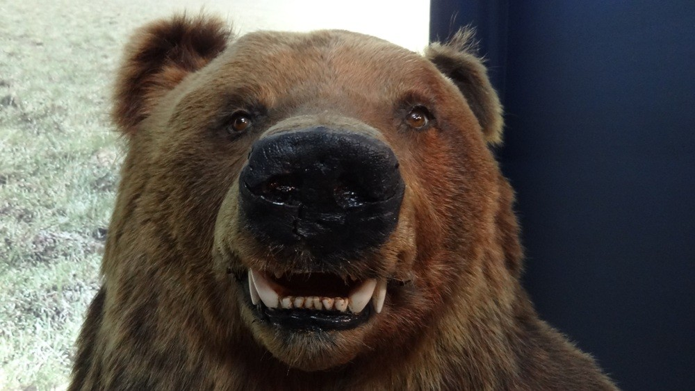

Mishkina zizn
Mishkina istoria nachalo
Михаил Потапыч, солидный медведь с густой рыжей шерстью и лапами размером с ведро, всегда держался в рамках приличий. Лес — его дом, ягоды — его пища, рыбалка — его хобби. Но однажды, наткнувшись на заброшенный охотничий домик, он обнаружил заветную бутылку — самогон, пахнущий сладким яблоком и чем-то ещё, неведомым, но безумно манящим. Первый глоток — и мир заиграл новыми красками. Солнце стало ярче, деревья — выше, а речка — чище и звонче. Потапыч пустился в пляс, нелепо переваливаясь с лапы на лапу, и пел песни голосом, похожим на грохот камнепада. Он ловил рыбу, но не для еды — для веселья, подбрасывая её вверх и ловя раскрытой пастью. Закат он встретил на вершине самой высокой сосны, оглушённый счастьем и огненной водой. Весь лес казался ему огромным дружелюбным баром, а звери — весёлыми компаньонами. Он обнимал сосны, разговаривал с белками и даже поделился самогоном с осторожной лисой, которая убежала с криком: «Потапыч, ты совсем дурак!» Ночью он крепко спал и видел цветные сны о лесных феях и танцующих грибах. Он чувствовал себя богом леса, повелителем всего живого, и это чувство было безумно притягательным. Он пил ещё и ещё, пока бутылка не опустела, и утро наступило неожиданно резким и болезненным ударом.
- элемент
- элемент
- элемент
- элемент
- элемент
- элемент
Mishkina istoria conec
Голова раскалывалась на части, каждая клеточка тела кричала от боли. Во рту было сухо, как в старой коряге, язык прилип к нёбу. Потапыч попытался подняться, но его свалила на землю волна тошноты. Мир перестал быть ярким и весёлым, он превратился в тусклое, размытое пятно боли. Лес перестал казаться дружелюбным, он стал враждебным, тёмным и пугающим. Каждый шелест листьев казался шепотом о грядущей карательной расправе. Потапыч полз к реке, надеясь хотя бы утолить мучительную жажду, но вода казалась ему горькой и отвратительной. Он помнил свою вечеринку, но, вспоминая её, только усиливал свои муки. Позор и стыд сжимали его сердце. Он лежал под деревом, предаваясь отчаянию, и клялся себе, что больше никогда не притронется к огненной воде. Он понял, что настоящее счастье не в пьяном угаре, а в простой лесной жизни, в чистом воздухе, свежей рыбе и сладких ягодах. Но это понимание пришло слишком поздно, оставив после себя лишь горький осадок и тяжёлое похмелье, которое длилось несколько дней, наполненных мучительной тоской и самобичеванием. И только через неделю Михаил Потапыч снова смог почувствовать себя полноценным жителем леса.
Послушай, медведь, раньше ты был таким же, как я, — бутылка водки, баня. Теперь, говорят, ты занимаешься йогой? Ха! Йога! Ты, волосатый алкоголик, на коврике? Смешно! Лучше бы ты был в баре, пил пиво. Это было бы по-мужски. А сейчас… ты как какой-то фитнес-тренер в шубе. Завязывай с этой здоровой жизнью, медведь. Жизнь слишком коротка, чтобы быть таким скучным. Вернись к бутылке, медведь!
- Джейсон Стетхем